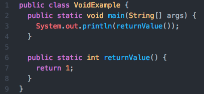
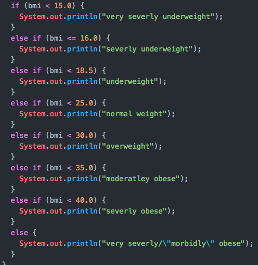

Full Stack Development Blog:
What is ‘void’ in a method declaration? How does this differ from declaring a method with a return type?
In Java, "void" is a return type found in the first method declaration. The "void" return type tells the computer to end the method without returning a value. This is different from having a method inside the main method that can return a value like an integer, double, string, or a boolean. In the example below, line 3 has a return value of "void" while line 6 has a return value of "int" to return an integer of 1 (line 7).

Java requires the code to declare the return value type in the method declaration statement, and "void" ends the Java code.
~August 28, 2019
What is the difference between ‘switch’ and ‘if/else’ in Java? When would you use one versus the other?
If/else statements and switch statements in Java is a way that you can compare variables that have values assigned to them. If/else statements are more commonly used than a switch, but both are good for different things.
A switch statement looks at the current value of the variable inside the parentheses after the word switch. The computer then looks through the case list for a match, and then runs the code from that line down until it is stopped by a break. Here is an example of a switch.

Similarly, an if/else statement compared the current value of the variable or variables inside the parenthesis, but this time it is looking to see if the value is true or false in the statement. If true, the computer will either run just the next line of code if curly brackets are not used, or it will run all of the code inside the curly bracket pair. If false, the computer will look for an else or else if statement. The code below an else statement will be run unless an else if statement is true. will be run if the Here is an example if an if/else statement.

If/else is better to use if you can write a boolean value statement. A switch is better to use for fixed data values.
~August 28, 2019
What happens when you include ‘import java.util.Scanner;’ in your code? Where does this functionality come from? What is the ‘java’ in ‘java.util.Scanner;’?
When you include 'import java.util.Scanner' in your code you are adding the java.util package to your program. This Scanner class adds the ability of the program to have an external input when the program is run.
The functionality of the Scanner comes from methods like next(), nextInt(), nextDouble(). The example below shows the code to allow a user to input an integer into the code.
Scanner keyboard = new Scanner(System.in);
int num = keyboard.nextInt();
The 'java' in 'java.util.Scanner;' refers back to the Java Platform were the packages come from. The documents can be found at java.util.Scanner
~August 27, 2019
What experience do you have coding? What have you created already? What do you want to create during/after the program?
I have been learning to code on my own recently and have highly enjoyed it. I have been working through Learning Java the Hard Way, Introduction to JavaScript on Udemy, CS50x: Introduction to Computer Science on Harvard University: edx.org, and Responsive Web Design Certification on freeCodeCamp.org.
Before this, I mostly used design tools for email marketing, website content management, print copy, and digital copy design. I have also built extensive and detailed spreadsheets and dashboards to manage and evaluate projects and events in my prior career.
I am hoping to be able to create websites and software applications that can integrate the learning benchmarks of the Skill Distillery's course. Doing so, it will help me to apply the skills I am learning.
~August 26, 2019
What is your ultimate goal in attending Skill Distillery? How are you going to achieve it? What is your big 'why'?
After graduation, I want to become a junior-level full stack software developer for a business in the greater Denver area. I plan on achieving this goal by working hard and mastering the skills I need through Skill Distillery's hands-on educational approach. From there, I would like to keep learning, growing, and cultivating my skill set so that I can become the best technologist I can be.
I envision this being a career that I could pursue for the next 30 years of my life and I am excited about the endless possibilities it brings. I also look forward to bringing out the best in others as I pursue a new career in computer programing. Achieving this career transformation will allow me to better provide and create memories for my family, and I will be able to give back to the things that mean the most to me.
~August 25, 2019